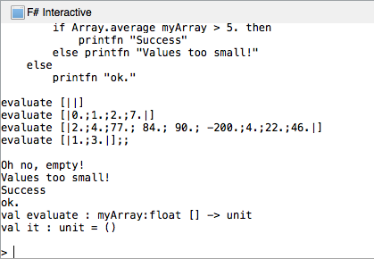

Duration
10-20 minutes
Lab Goals
The primary goal of this two-part lab is to:
- See how the different types of pattern matching can be used more efficiently than if-then-else statements in F#
- to practice different types of pattern matching

Steps
Rewrite an if-then-else to use pattern matching
Let's begin by examining the following if-then-else statement which takes an array and verifies that it contains contains 1-9 values and that the average of the numbers in the array is > 0. Copy / paste this code into the F# REPL to see it execute.
let evaluate myArray =
if Array.isEmpty myArray then
printfn "Oh no, empty!"
elif Array.length myArray > 10 then
printfn "Array too long!"
elif Array.max myArray > 4. then
if Array.average myArray > 5. then
printfn "Success"
else printfn "Values too small!"
else
printfn "ok."
evaluate [||]
evaluate [|0.;1.;2.;7.|]
evaluate [|2.;4.;77.; 84.; 90.; -200.;4.;22.;46.|]
evaluate [|1.;3.|]
Our task is to rewrite code using F#'s pattern match capability.
- Begin by creating a library application and opening the script.fsx file in your IDE. You can use either Xamarin Studio or Visual Studio.
-
Write a new function named
pattern_match_evaluatewhich takes a float array as a parameter and uses amatchstatement to duplicate the above logic.- Each
elifcondition is a separate comparison value. - You will use pattern guards (
when) to provide the comparison logic.
- Each
- Use the same array data as above and select your code and click CTRL+ENTER to test it in the REPL. You should get the exact same responses back from this version of the logic.
Use Tuple pattern matching
Next, let's s rewrite this using a tuple pattern match with the AND pattern.
- Create a new function that takes the same float array.
- This time, create a Tuple using the array length, max and average and begin a pattern match on the new tuple.
-
Provide comparison statements against the Tuple data to implement the
if-eliflogic. You will need:- A case when Array.length is zero, the max and average can be wildcards.
- A case when the Array.length > 10, use a pattern guard.
- A case when the max > 4 and the average is > 5 using an AND condition.
- A case when the max > 4 and the average is <= 5 using an AND condition.
- A final wildcard case for the "ok" statement.
- Try to run your code using the same data as before, what happens?
- If you passed in an empty array, you should get a
ArgumentExceptionbecause theArray.maxandArray.averagefunctions do not work when the array is empty. - Fix this by changing your tuple to have an
if-elseexpression to provide the max and average values only whenArray.length> 0.
Create a function that matches on a list and returns a tuple
Now that we've gotten a little practice with pattern matching on arrays, let's try pattern matching on a list. Our goal is to pass in a list with 1-3 elements and return a tuple which indicates how many elements are in the list as well as which position (if any) the value 2 is in. So, if we pass in [0,2,3] we should get back (2,3) indicating the 2 is in the second position and the list has a length of 3.
- Let's start by creating a function that matches on a list (up to length 3), and returns a tuple.
-
Next, start a match to return a tuple, which contains:
- The position (if any) of the number 2 in the list and
- The length of the list.
- Remember you can use the list syntax
| [2] | [2;_] | [2;_;_] ->as a match, and you will want to use the OR pattern to look for the value 2 in each spot as shown. - Select your code and click CTRL + Enter to test it in the REPL, try different lists to verify that it is working as expected.
-
Bonus: There is more than one way to solve this, can you come up with another solution?
- Should you calculate the list length as part of the match statement, or separately?
Summary
In this lab, we have rewritten an if-then-else statement to use pattern matching and utilized several types of pattern matching on lists and arrays.